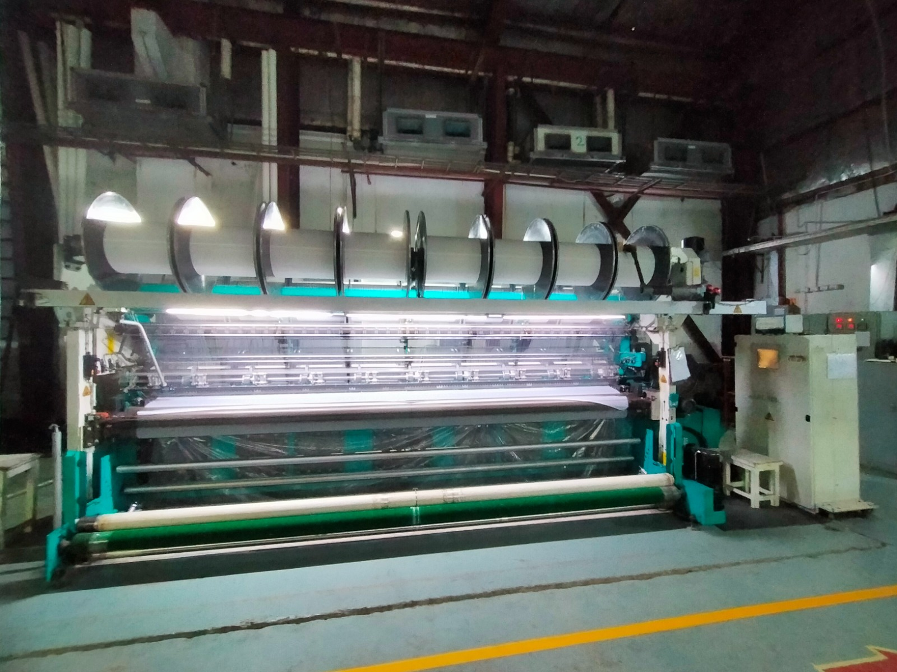
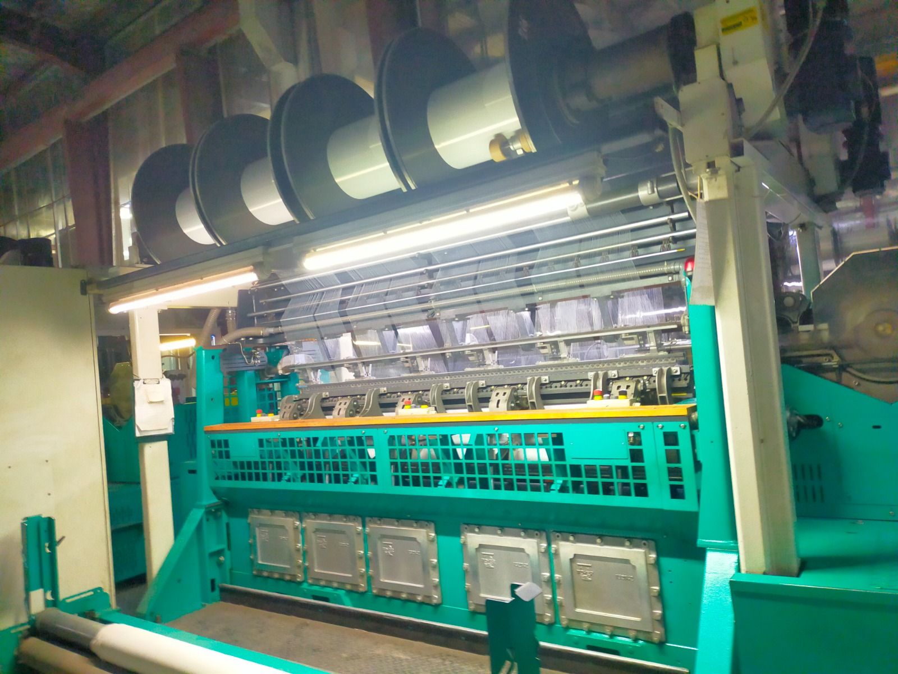
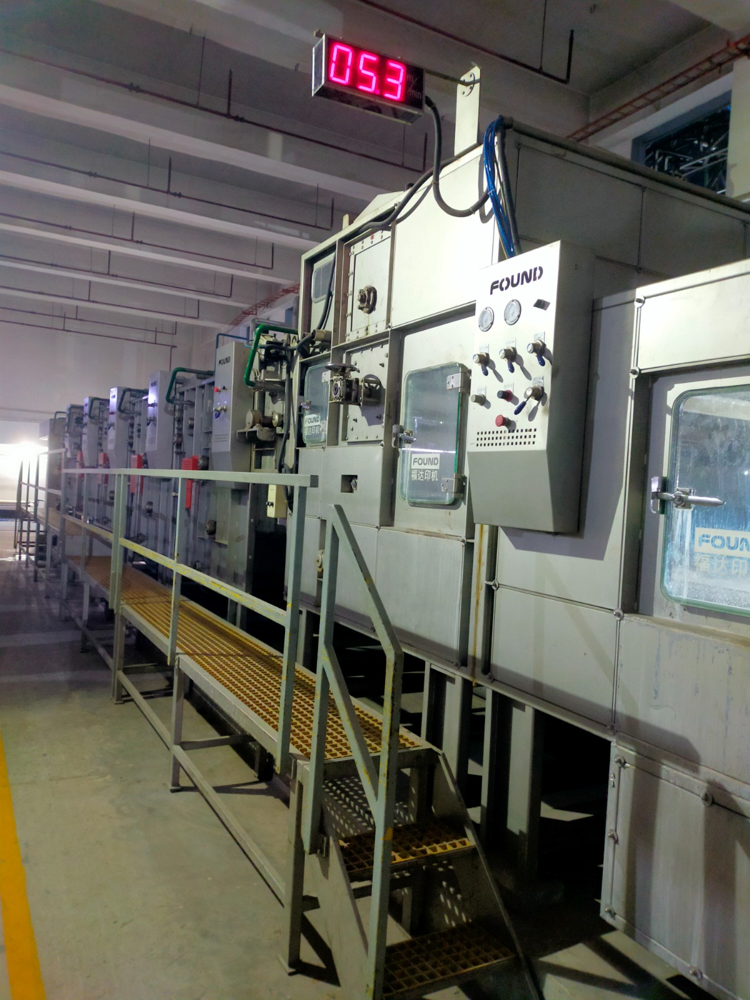

Yarn
Combed and carded ring-spun cotton yarn in counts suited for shirting, sheeting, and industrial woven applications.
Explore yarn →
Home / Products
Integrated cotton textile offerings — from ring-spun yarn through woven greige and export-ready finished fabric.
Categories
Three connected product lines designed for apparel, home textile, and industrial cotton programs.

Combed and carded ring-spun cotton yarn in counts suited for shirting, sheeting, and industrial woven applications.
Explore yarn →Greige and finished cotton fabrics woven on air-jet and rapier looms — poplin, twill, oxford, and plain constructions.
Browse woven fabric →
Reactive and pigment dyeing, mercerization, sanforizing, and soft finishes for export-ready cotton fabric.
Request finishing spec →Send us your target construction, GSM, and finish — we will propose a mill program.